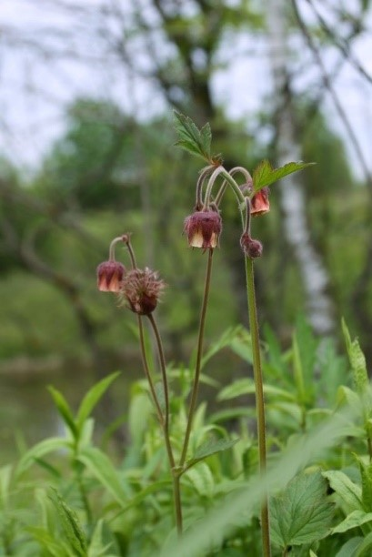

|
Многолетнее растение высотой от 30 до 120 см с коротким толстым корневищем. Листья непарноперистые, с 5-9 более крупными
эллиптическими листочками и 6-10 промежуточными мелкими долями, сверху темно-зеленые, снизу бело-бархатистые с мелким железистым опушением.
Соцветие — колосовидная кисть. Цветет в июне-августе. Плод с 4 рядами щетинок. Одно растение может продуцировать около 200 семян,
распространяемых животными. Плоды созревают в августе-сентябре. Растет на лугах, опушках, вырубках и полянах, открытых склонах к
берегам рек, среди кустарников, в степи, по краям полей, изредка в посевах.
Фотограф: Игорь Павлов |
Кустарник высотой до 4-8 м с прямостоячими стволиками и мощной системой гипогеогенных корневищ. Почки конусообразные, острые,
красновато-коричневые. Верхушечная почка длиной 6-12 мм, боковые почки мельче и отклонены вбок. Почечные чешуи неопушенные,
с золотисто-коричневой пленчатой каймой, по краю с длинными белыми реснитчатыми волосками. Листья очерёдные, широкоэллиптические,
яйцевидные или овальные, длиной 2,5-6 см, шириной 2-3,5 см. Верхушка листа коротко-заостренная, основание округленное или сердцевидное.
Молодые листья оливково-зеленого цвета. Листья с нижней стороны в начале вегетации войлочные, позднее голые.
По краю листа мелкие острые зубчики, не доходящие до основания пластинки, обычно 5-7 зубцов на 1 см длины.
Листья без заметной осенней окраски. Прилистники линейные, опушенные, быстро опадающие. Цветки многочисленные, белые.
Диаметр цветка 16-24 мм. Чашелистики острые, продолговато-треугольные, длиной 2-3 мм. Лепестки длиной 6-10 мм, продолговато-овальные.
В цветке 20 тычинок с голыми нитями, 5 столбиков пестиков срастаются примерно до половины. Завязь нижняя. Короткая и узкая кисть
направлена вертикально, длиной 8-12 см с 4-10 цветками, напоминает колос. Особенно обильное цветение и плодоношение бывает на
верхушечных побегах прошлого года.
Фотограф: Виталий Гуменек |
|
Листопадный кустарник 1-1,5 (2) м высотой с растопыренными прямостоячими ветвями с многочисленными укороченными веточками.
Кора на однолетних побегах беловатая и красновато-коричневая, на многолетних красновато-серая или серая. Листья 3,5-7 см длиной и 0,8-2 см
шириной (длина листа в 3-4 раза превышает ширину) расположены на укороченных веточках пучками, на ростовых побегах очередные, простые,
все голые, ланцетные или линейно-ланцетные, на верхушке заостренные, по краю пиловидно-зубчатые. Цветки распускаются одновременно
с листьями и сидят чаще всего на укороченных побегах на коротких цветоножках около 2 мм длиной, окруженных буро-коричневыми почечными
чешуями. Чашелистики продолговато-яйцевидные, железисто-мелкозубчатые. Цветки розовые. Лепестки обратно-яйцевидные или
продолговато-овальные, на верхушке туповатые, иногда неглубоко выемчатые, 10-17 мм длиной и 4-9 мм шириной.
Плоды - широкояйцевидные костянки 1-2 см длиной, сплюснутые с боков, густо и жестко войлочно-мохнатые, беловато соломенно-желтые.
Косточки сплюснутые, с неглубоко неправильно сетчато-бороздчатой поверхностью, с толстым брюшным швом, в основании прямые или
едва косо-оттянутые. Насекомоопыляемое. Автохор. Размножается семенами и летними черенками. Семена необходимо
стратифицировать 2-3 месяца при 0-5 градусах по Цельсию. Цветет в апреле - начале мая, плоды созревают в июле.
Фотограф: Андрей Белехов |
Обычно низкий кустарник 0,5-1 м высотой, редко до 2 м, образующий корневые отпрыски. Старые ветви темно-серые,
прямостоячие или немного поникающие. Молодые побеги темно-коричневые, иногда зеленоватые, голые или слабо опушенные, покрыты чечевичками.
Листья до 5 см длиной и 2,5 см шириной продолговато-эллиптические или обратно-яйцевидные, на вершине заостренные или тупые,
по краю тупозубчатые, с зубчиками, несущими на кончике хрящеватое остроконечие, с обеих сторон голые, сверху темно-зеленые,
снизу более светлые. Черешки короткие 3-15 мм, без желёзок. Прилистники узкие, линейные, зубчатые. Цветки белые, 12-18 мм диаметром,
в сидячих или коротко стебельчатых зонтиковидных соцветиях, по (2) 3-4 на голых цветоножках 15-30 мм длиной,
удлиняющихся при плодах до 40 мм. Гипантий колокольчатый. Плоды 8-10 (15) мм в диаметре, от шаровидных до продолговато-яйцевидных,
на вершине обычно с коротким заострением, красные и темно-красные, с сочной кисло-сладкой мякотью. Косточки гладкие,
почти шаровидные или яйцевидные. Насекомоопыляемое. Орнитохор. Размножается семенами, корневыми и летними черенками.
Семена необходимо стратифицировать 4-5 месяцев при 3-5 градусах по Цельсию. Цветет в апреле-мае, плодоносит в июле-августе.
Фотограф: Александр Кутенев |
|
Корневище ветвистое, темно-коричневое, длинное, деревянистое. Цветоносы восходящие, ветвистые у основания, бледно-красно-коричневые,
полые, в нижней части голые, в верхней волосистые. Прикорневые листья 6-16 см, включая черешок; прилистники преимущественно
придаточные к черешку, перепончатые; черешок 2,5–12 см; листовая пластинка непарноперистая, 5-7-листовая; верхние стеблевые листья:
прилистники яйцевидные, листовые, верхушка часто зубчатая; листовая пластинка 3-листовая; листочки сидячие или подсадковые,
адаксиально темно–зеленые, эллиптические или продолговатые, абаксиально ворсинчатые, адаксиально голые или слабо прижатые пилозные,
основание клиновидное, края проксимально цельные, дистально резко зазубренные, верхушка тупая или острая. Соцветие верхушечное или пазушное,
цимозное, от 1- до нескольких цветков; цветонос и цветоножки пилозные и железисто-волосистые. Цветки 1-1,5 см в диам.;
прицветники конические, 3-5 мм. Гипантий блюдцевидный, абаксиально пилозный. Чашелистики раскидистые, темно-фиолетовые,
треугольно–яйцевидные, обе поверхности пилообразные, верхушка заостренная; сегменты эпикаликса ланцетные или линейные, абаксиально пилозные,
верхушка острая или заостренная. Лепестки темно-фиолетовые, яйцевидно-ланцетные, 3-8 мм, короче чашелистиков, верхушка заостренная.
Тычинок 15-25, короче лепестков; нити и пыльники темно-фиолетовые.
Фотограф: Мария Новикова |
Небольшой кустарник высотой до 2 м с цельнокрайними, яйцевидными, снизу беловойлочными листьями на коротких черешках.
Цветки мелкие розовые, собранные в щитковидные кисти. Плод — ложная костянка. Цветет в апреле—мае.
Фотограф: Владимир Сафонов |
|
Листовые пластинки на цветущих ветвях во время цветения мохнато-волосистые, при плодах снизу довольно густоволосистые,
(3)5-9(11)-раздельные, с боковыми жилками первого порядка, направленными только к верхушкам долей и лопастей,
реже имеются очень слабые (едва заметные невооружённым взглядом) жилки, направленные к выемкам между ними.
Большая часть вполне развитых листьев рассечена не меньше чем до половины расстояния от края пластинки, до средней жилки.
Плоды чёрные, 10-12 мм длины. Колючки до 1 см длины, немногие. Гипантии и цветоножки густоволосистые. Тычинок около 20. Стилодиев 5.
Фотограф: Сергей Соколенко |
Высокий кустарник, реже деревце 1-4(6) м высотой, с крепкими пурпурно-коричневыми блестящими побегами,
обычно несущими толстые прямые колючки, длиной 2,5-4 см. Листья с 1-5 парами чаще неглубоких и острых лопастей,
от яйцевидных и широкоромбических до обратнояйцевидных с клиновидным основанием, пильчатые, сверху матовые.
Цветки в густых щитках на концах коротких облиственных веточек. Венчики белые. Тычинки с пурпурными или белыми пыльниками.
Плоды от желтых, оранжевых до темно-красных, с 3-4 косточками и мучнистой мякотью, съедобные. Цветет в середине мая,
плодоносит в начале сентября.
Фотограф: Федор Шакула |
|
Многолетнее растение, достигающее высоты более 100 см с членистым деревенеющим корневищем, из которого выходит прямой, неопушенный,
в верхней трети ветвистый стебель. Листья непарноперистосложные, листочки чередуются с прилистниками, сверху голые, снизу беловойлочные.
Листочки продольнояйцевидные, зубчатые, последний листочек делится на 3-5 долей . Цветки мелкие, желтовато-белые,
собраны в метельчатые соцветия, издают миндальный аромат. Цветет с июля по август. Болотное растение,
растет как в травяных болотных сообществах, растительных сообществах на подсыхающих низинных лугах, так и порослях в пойменных лесах и
сопровождающих их кустарников.
Фотограф: Денис Каращуба |
Многолетнее растение.Корневище с клубневидными утолщениями («орешками») на корнях. Стебель прямой, тонкий, высотой 80 см.
Листья в прикорневой розетке, перистые. Цветки мелкие, белые или беловатые, шестилепестные. Соцветия многоцветковые,
щитковидно-метельчатые. Плоды — опушённые листовки. Цветёт в июне — июле. Плоды созревают в июле — августе.
Фотограф: Игорь Павлов |
|
Многолетнее травянистое растение. Стебели прямостоячие или приподнимающиеся, 5-20(30) см высотой, немного длиннее собранных в розетку
прикорневых листьев. В пазухах прикорневых листьев развиваются длинные, укореняющиеся в узлах, ползучие побеги. Стебель покрыт волосками,
в нижней части оттопыренными, в верхней части более или менее прилегающими. Черешки корневых листьев длинные,
покрыты горизонтально-оттопыренными волосками. Листья тройчатосложные, средний листочек яйцевидный или ромбический на коротком черешочке,
боковые листочки косо-яйцевидные, большей частью сидячие, с 6-13 крупными треугольными или полуяйцевидными зубцами с каждой стороны,
оканчивающимися небольшим красноватым остроконечием, конечный зубец мельче соседних, но выдается над ними. Листья сверху темнозеленые,
рассеяно прижато-волосистые, снизу сизовато-зеленые, шелковисто прижато-волосистые, с мало выступающими жилками.
Соцветие с недоразвитым стеблевым листом при основании, щитковидное, малоцветковое. Цветоножки длинные, прижато-волосистые.
Цветки обычно не более 2 см в диаметре, обычно обоеполые. Чашелистики треугольные, острые или коротко-заостренные, почти равны или
немного короче лепестков, прижато-волосистые, при плодах оттопыренные или отклоненные книзу. Плоды яйцевидные, овально-конические или
почти округлые, в зрелом виде ярко-красного цвета, легко отделяющиеся от цветоложа. Насекомоопыляемое. Орнито- и зоохор.
Цветет в конце мая, плодоносит в июле.
Фотограф: Людмила Саплицкая |
Многолетник высотой 5-20 см с косым маловетвистым корневищем, густо одетым остатками прилистников и черешков.
Над земные побеги обычно очень ко роткие, нитевидные. Стебель пря мостоящий, одинаковой длины с листьями, довольно тонкий,
густо покрытый оттопыренными волос ками. Прилистники узкие, корич невые. Прикорневые листья на длинных черешках, мохнатых от оттопыренных
волосков, тройчатые, снизу бледнозеленые, сверху зеленые, блестящие. Средний листочек на коротком черешочке, яйцевидный.
Стеблевые листья сидячие или на очень коротком черешке, косояйцевидные, с мелкими туповатыми зубцами. Соцветие небольшое, щитковидное,
рыхлое. Цветки довольно крупные, до 2,5 см в диаметре, обычно обоеполые, правильные. Чашечка из двух кругов, по пяти листочков в каждом
(наружные чашелистики — подчашие — короче внутренних), при плоде прижатых к нему. Пять округлых лепестков длиной 5-10 мм, желтовато-белых,
коротконоготковых, заходящих краями друг за друга. Тычинок много. Цветоложе волосистое, длиной около 1 см. Плоды шаровидные или
обратнояйцевидные, суженные при основании, желтовато-белые, красноватые лишь на верхушке, реже целиком розовые или бледно-красные,
с семянками, слегка погруженными в мякоть и трудно отделяемыми от мясистого цветоложа. Плод земляники называют ложным, так как основную,
съедобную его часть, составляет разросшееся цветоложе, а на нем находятся настоящие плоды мелкие сухие семянки. Цветет в мае-июне,
плодоносит в июне—июле.
Фотограф: Игорь Павлов |
|
Многолетнее травянистое растение высотой 30-120 см с длинным ползучим корневищем. Стебель прямостоячий, гладкий, ветвистый,
вверху четырёхгранный, внизу округлый. Листья линейно-ланцетные или ланцетные, длиной (23)40-45(60) мм и шириной (3,5)5-7(9) мм,
суженные к обоим концам, часто на верхушке с коротким белым остриём, тонкие, с одной жилкой, сероватозелёные, особенно снизу,
располагаются в мутовках по 6-10 на коротких черешках. Цветки в верхушечных рыхлых метельчато-щитковидных соцветиях;
цветоносы и цветоножки волосовидные, в 2-3 раза длиннее цветков, голые. Венчик белый, длиной 3-6 мм, с четырьмя яйцевидно-продолговатыми
лопастями, которые срослись при основании, а заканчиваются коротким остриём. Тычинки короче лопастей венчика, пыльники жёлтые.
Плоды двойчатые, но чаще с одним развившимся шаровидным мерикарпием; незрелые плоды гладкие, с голубоватым восковым налётом;
зрелые — без голубоватого налёта, слегка мелкоморщинистые. Цветёт в июне-сентябре, плоды созревают в июле-октябре.
Фотограф: Раду Страту |

Многолетнее растение высотой 15-50 см с крепким корневищем, покрытым остатками листьев. Гемикриптофит. Стебли опушенные, железистые,
красноватой окраски, вверху разветвленные. Листья лировидные, перистосложные в розетках на длинных черешках. Боковые листочки
косояйцевидные, зубчатые, опушенные, прилистники срастаются с черешками. Стеблевые листья тройчатые, прилистники не срастаются с черешками.
Цветки поникшие, образуют рыхлое верхушечное соцветие — полузонтик. Чашечка карминно-красная, лепестки белые или розовые с красными жилками,
суженные в ноготок. Цветоножки опушенные. Цветет в мае и июне. Плод — поздно опадающий многоорешек красной окраски.
Фотограф: Дмитрий Орешкин |
|
Многолетнее травянистое растение высотой 30-60 см с толстым, косым, чаще всего неразветвленным корневищем,
из которого развивается прикорневая листовая розетка. Гемикриптофит. Стебель прямостоячий, граненый, мягкоопушенный, слабоветвистый.
Прикорневые листья длинночерешковые, прерывисто-непарноперистые, состоят из 3-9 округло-яйцевидных, неравномерно зубчатых листочков.
Стеблевые листья тройчатые, верхние трехлопастные: листовая пластинка с обеих сторон покрыта немногочисленными волосками и
железками на ножках. Цветки на длинных цветоножках, прямостоячие, мелкие, диаметром 3-7 мм; чашечка с подчашием, венчик ярко-желтый,
быстроопадающий. Цветки собраны в полузонтик (дихазий). Цветет с мая по октябрь. Плод — семянки коротко и щетинисто опушенные,
нижняя часть их придатков голая, вчетверо длиннее верхней.
Фотограф: Игорь Павлов |
Невысокое дерево до 10 м высотой с раскидистой кроной и колючими ветвями, иногда растет кустообразно. Листья до 10 см длиной,
эллиптические с оттянутой заостренной верхушкой, по краю пильчато-зубчатые, темно-зеленые, лоснящиеся, при распускании опушенные,
позже голые. Цветки собраны на верхушках укороченных побегов в рыхлых щитках. Чашелистики длинно заостренные. Цветки крупные,
до 4 см в диаметре. Лепестки белые, в бутонах бледно-розовые, округлые, с наружной стороны опушенные. Плоды (яблоки) до 2 см в диаметре,
шаровидные или округло-яйцевидные, желто-зеленые, часто краснеющие с одного бока. Насекомоопыляемое. Орнито- и зоохор.
Размножается семенами, корневыми и летними черенками. Цветет в мае, плоды созревают в августе-сентябре.
Фотограф: Михаил Шовкун |